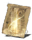

Descrição: Feitiço superior à Cura. Restaura PV.
A força dos milagres é influenciada pela fé de quem os usa.
Os milagres são histórias dos deuses passadas adiante há muito tempo, mas poucos dos tomos originais permanecem completos, e a maior parte dos que existem são restaurações.
Localização:
Usos: 2
